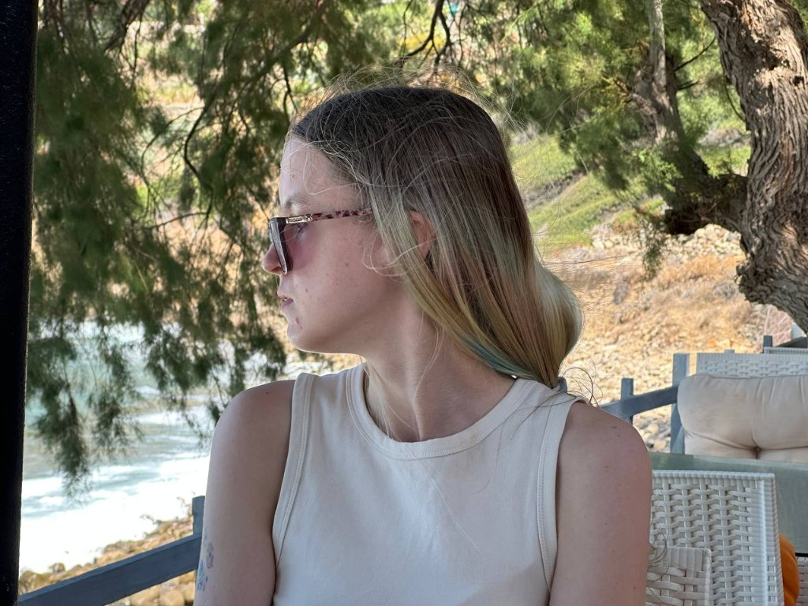

SpankPls
Product design · growth · additional products
Behance →UI/UX · HCI · Weimar
I craft calm interfaces with research depth, data literacy and gentle neural-tool fluency — for teams who care about people, not noise.

01
ITMO taught me UI/UX, painting and code. Applied maths taught me systems. Bauhaus Weimar teaches me humanity in technology.
02
✦ click the markers along the wave
2018–2020
Physics-mathematics lyceum with honours. Regional English contest winner, most creative student, Physics Lab nominee. Volunteering and organising events — learning to lead with care.
03
04
Open to junior product roles worldwide. Replies within two days.
daria.soldatova@uni-weimar.de Download CV